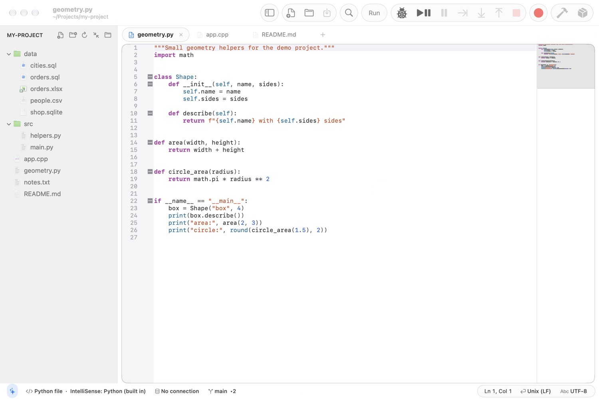

Nativo de verdad
Hecho con Cocoa para macOS, no una página web dentro de un envoltorio. Arranca rápido, se comporta como el resto de tu Mac, y toda la app es una descarga de menos de 10 MB.
Versión 1.0.0 para macOS
J++ es un editor de código rápido y nativo para Mac. Escribe en 95 lenguajes, ejecuta y depura tu código, consulta tus datos con SQL, sube tus cambios a GitHub y pregunta a un asistente de IA, todo en una sola app pequeña.
Para macOS 12 o posterior · Apple Silicon e Intel

Por qué J++
La mayoría de los editores empiezan vacíos y te piden armar el resto. J++ empieza completo, y está hecho para Mac y para nada más.
Hecho con Cocoa para macOS, no una página web dentro de un envoltorio. Arranca rápido, se comporta como el resto de tu Mac, y toda la app es una descarga de menos de 10 MB.
Ejecutar, depurar, IntelliSense, SQL, GitHub e IA son parte de la app. No hay tienda donde buscar ni extensiones que elegir, configurar y mantener al día.
Ejecuta SQL en Databricks, Snowflake, PostgreSQL, MySQL, SQL Server y SQLite. Hasta un libro de Excel o un archivo CSV se convierte en una tabla que puedes consultar.
Conecta tu propia clave de la API de Claude, cualquier servicio compatible con OpenAI o un modelo que corre en tu Mac. J++ no tiene suscripción, y tu código se envía solo cuando tú lo pides.
Sin cuenta, sin analíticas, sin publicidad, sin rastreo. Las contraseñas, los tokens y las claves se guardan en el Llavero de macOS.
Liquid Glass en macOS 26, SF Symbols, SF Mono y apariencias clara y oscura que siguen al sistema. Una sola app para Apple Silicon e Intel.
Funciones
Editar
El motor de edición es Scintilla, conocido por su rapidez con archivos grandes. A su alrededor, J++ añade las herramientas que usas todo el día.
IntelliSense
Autocompletado mientras escribes, ayuda de parámetros, descripciones al dejar el puntero sobre un nombre y subrayado de errores y advertencias.

Ejecutar y depurar
Compilar y Ejecutar funcionan con todos los lenguajes del menú. La salida aparece debajo de tu código y, tras un error, el cursor salta a la línea que indica el compilador.

Bases de datos
Guarda tus conexiones una vez y pulsa ⌘↩ en una pestaña SQL. Los resultados llegan a una tabla que puedes copiar o exportar como CSV.

Asistente de IA
Haz una pregunta y el asistente lee el archivo que tienes delante y tu selección. Insert y Replace Selection llevan el código de la respuesta al editor en un solo paso de deshacer.

GitHub
Conecta tu cuenta y J++ muestra tus repositorios. La barra de estado indica la rama, lo que hay por enviar o recibir y cuántos archivos cambiaron.

Todo lo de esta página está en la app la primera vez que la abres.
Nunca inicias sesión en J++. No hay nada que crear.
El asistente de IA usa tu propia clave o tu propio modelo local.
J++ no te mide ni envía nada a su autor.
Help ▸ J++ Guide describe cada función paso a paso, con capturas en claro y oscuro, y una tabla con todos los atajos de teclado.
J++ 1.0.0 está casi listo. La descarga estará disponible en esta página.
Para macOS 12 o posterior · Apple Silicon e Intel
Compilar, Ejecutar y Git usan las herramientas de desarrollo de Apple. Instala Xcode, o sus herramientas de línea de comandos, para usarlos.